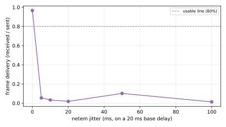
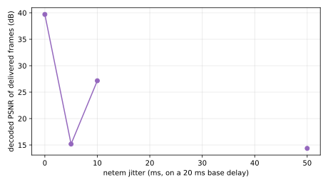

Jitter reorders and delays packets, so beyond the receiver jitter buffer they arrive too late and are dropped. On a fixed 5 Mbps / 20 ms link with no loss and recovery off, as netem jitter rises from 0 to 100 ms, frame delivery should stay high while the buffer absorbs the jitter and then collapse once jitter exceeds what the buffer can reorder, marking a degeneration boundary. PSNR of delivered frames and p95 latency are reported alongside. If delivery holds across the range, the jitter buffer absorbs up to 100 ms here.
{'Inconclusive': 'netem jitter collapses delivery immediately with recovery off, but the data is too sparse to pin a boundary. At 0 ms jitter the viewer gets 97% of frames; at 5 ms it gets about 5%, and the higher-jitter cells deliver near zero and intermittently fail (9 of 18 runs returned no frames, leaving most jitter levels with a single successful rep).'}
{'The mechanism is reordering, not corruption. At 5 ms jitter the delivered frames show no decoder errors (33 of 600 frames, zero depay/decoder warnings)': "packets are not damaged, they arrive too out-of-order for the receiver jitter buffer and are dropped. netem's `delay 20ms 5ms` gives each packet an independent random delay, which reorders aggressively; real network jitter usually preserves order better."}
{'Consistent with the loss finding (H10)': 'without recovery, the RTP path is fragile to anything that disturbs packet arrival. But the netem reorder model likely overstates real jitter, and with half the runs failing the curve is not trustworthy. A clean jitter boundary needs a reorder-controlled jitter model (rate-paced or correlated delay) or recovery on; both are good follow-ups.'}
Limitations
Recovery is off (nack/pli/fec false), matching H6-H10. With NACK/RTX on, late-but-recoverable packets could be retransmitted and the boundary would move.
netem jitter uses a uniform distribution around a 20 ms base delay; a normal or pareto distribution would reorder differently at the same nominal jitter.
The receiver jitter buffer size (rtpjitterbuffer latency) sets where absorption ends; this measures the system as configured, not a tuned buffer.
{'A re-run with a 200 ms receiver budget was tried to rule out a wait-budget cause (the budget-0 setting that neutered NACK in H12). It did not help': '50 ms jitter still delivered 0 frames, in fact worse, because latency_budget_ms is a frame deadline (drop-if-later), not a reorder buffer. So the collapse is the netem reordering itself, not the budget. A clean jitter result needs a reorder-controlled netem model (rate-paced or correlated delay) or an explicitly enlarged rtpjitterbuffer; both are real investigations, not config tweaks.'}
{'Single arm (only scream|gcc exist). Workload-specific (realmotion-avi, 1280x1024 MJPEG, 10 fps, 60 s), 4000 kbps ceiling. 3 reps per cell. Boundary signal is frame delivery': 'usable line 80%, collapse below 50%.'}
Figures

Frame delivery vs netem jitter (recovery off). The boundary is where late and reordered packets fall outside the jitter buffer and delivery drops.

PSNR of the frames that do arrive, vs jitter.
Tables
Delivery, PSNR and latency by jitter
metric
0 ms
5 ms
10 ms
20 ms
50 ms
100 ms
frame delivery
0.966
0.055
0.033
0.018
0.102
0.013
PSNR of delivered (dB)
39.70
15.18
27.16
14.37
p95 latency (ms)
-24.88
-30.48
-30.45
-30.47
-22.73
25.76
Experimental setup
h11-jitter-boundary
SCReAM jitter-boundary sweep on a fixed 5 Mbps / 20 ms link, recovery off.